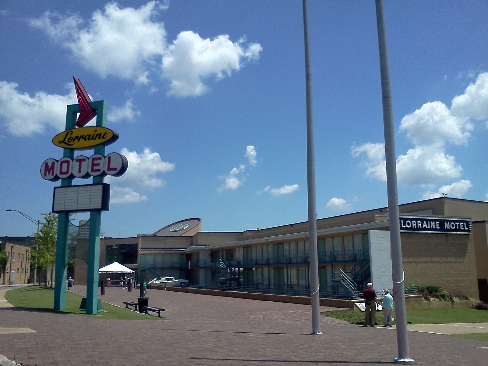
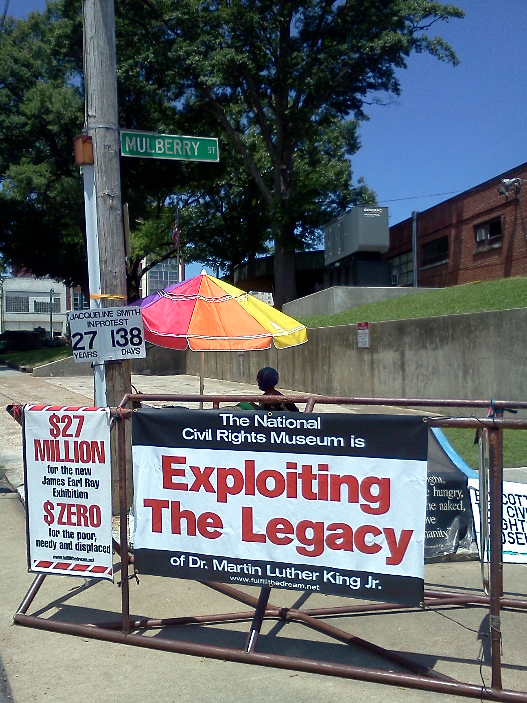
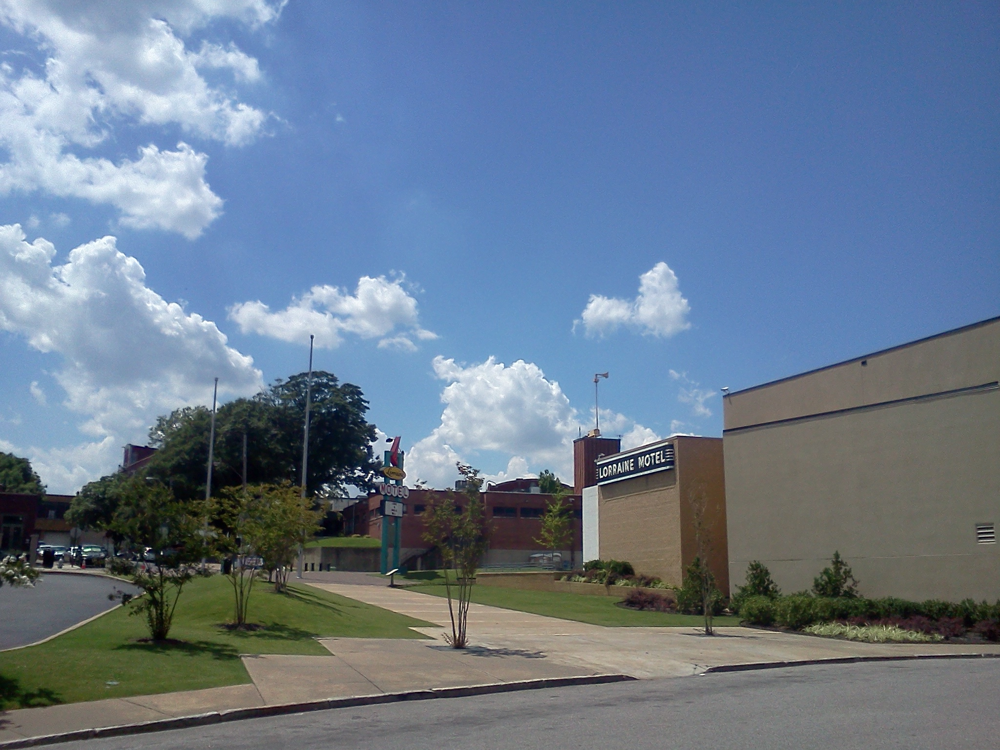
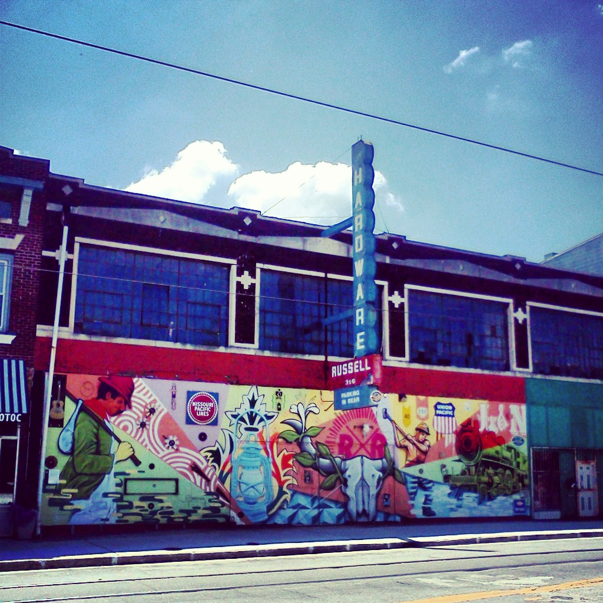
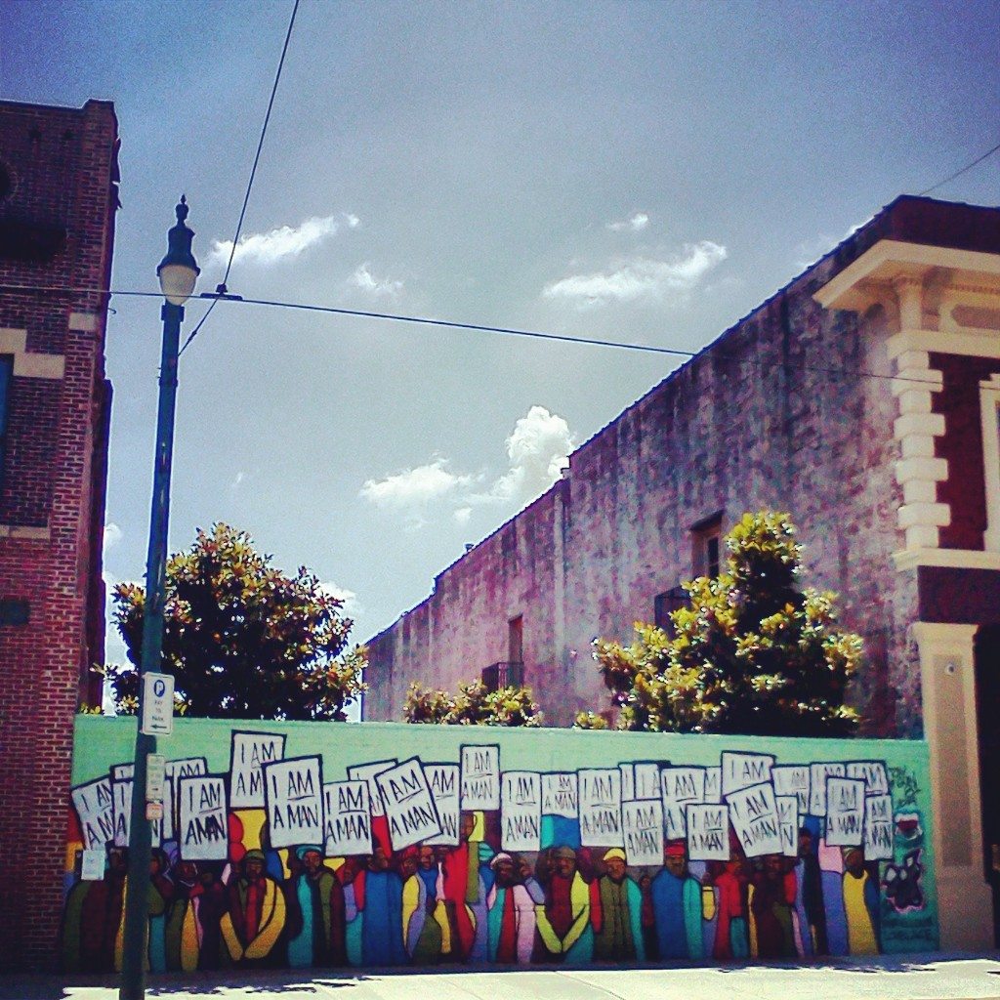
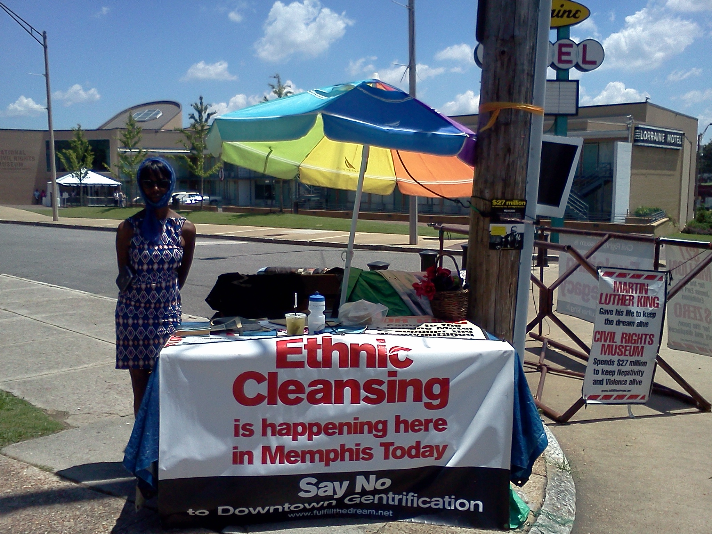

For more background on Jackie Smith and her protest, check out an expanded version of this article here.
Yesterday (June 9, 2015), I had the honor of meeting Ms. Jacqueline
Smith. I was staying in Memphis for the night, three blocks away from
the Lorraine Motel where Dr. Martin Luther King Jr. was killed. After
the motel went out of business, it was purchased and turned into the
National Civil Rights Museum. The initial investment from the state of
Tennessee to turn it into a tourist destination was $8.8 million,
while in the past decade a further $25 million was pumped in to build
a new wing attached to the motel and various beautification projects,
all while the neighborhood of South Main faced continual divestment
and - more recently - heavy gentrification that priced out many
original residents.

As of yesterday, Ms. Smith had been protesting outside of the Lorraine
Motel for 27 years and 138 days. She first lived in the Lorraine Motel
as a teenager and, when the motel was turned into a museum, she was
forcibly evicted by Shelby County sheriffs. Since then, she has been
staying across the street from the Lorraine Motel, sitting on a bench
and telling Dr. King’s radical vision to anyone who’s willing to stop
and listen. In a 1988 article on the USA Today, Ms. Smith reminded
folks that the transformation of the Lorraine Motel into a state-owned
money-making property did not benefit many of South Main’s
African-American residents, nor did Coretta Scott King (Dr. King’s
widow) sanction this project. ‘Dr. King would have wanted me to stay
here. He said he didn’t want any memorial, that he wanted to help the
poor. That’s what he died doing.’ Ms. Smith said back then.

I first learned of Ms. Smith’s ongoing protest in a class from Dr.
Jamie Winders during an introductory human geography course. I was a
teaching assistant for that course during my very first semester in
graduate school, and it was challenging to both teach myself and convey
to the students that there are contesting visions of how to best
commemorate historical legacies and that building a shiny monument
might not be an idea that everyone - especially local residents - might
agree with. Now that I’m on my way out of graduate school to embark on
my own research project, visiting Ms. Smith seems like a fitting start.
Perhaps coincidentally, the National Civil Rights Museum is closed on
Tuesdays, so I didn’t have the chance to pay $15 for a tour even if I
wanted to. That did not stop many people from hopping off their cars,
snapping a photo in front of the balcony where Dr. King was shot, and
then driving away immediately. During the hour or so that I spent
there, I counted more than 20 people stopping by - none of whom paid
any attention to Ms. Smith. It was just before noon on a scorching
day, but Ms. Smith remained under the umbrella eager to talk to anyone
who’s willing to stop by.
I told Ms. Smith that I’m from Seattle and that my professor at school
had told her students about her protest. That folks from outside
Memphis knew about her protest made Ms. Smith very happy. Her table was
covered with materials that document the state’s ongoing project of
gentrification in South Main. Of the $25 million dollars that went into
building a new wing and refurbishing the museum, none went to projects
that work with local residents. The neighborhood first declined due to
continual divestment. The resulting depression of property prices then
allowed developers to swoop in and producing a neighborhood renaissance
, just not with many of the original residents. Ms. Smith pointed to
new condos that were built in the past decade and told me about their
developers. Very few of them were invested in maintaining affordable
housing for original residents. Of the vacant lots in the neighborhood
, Ms. Smith said that she wouldn’t be surprised that they’re all bought
up in a few years.

I told Ms. Smith about my experience of teaching her protests to
undergraduate students, and I asked her what she would tell the
students who didn’t see building a museum to commemorate Dr. King’s
legacy as problematic. ‘Everybody quotes Dr. King’s speeches. They’re
all on Youtube now.’ she said. ‘But few people remember that Dr. King’s
most pressing goal was to help lift people out of poverty in their own
neighborhoods.’ The primary issue, Ms. Smith said, is about cultural
appropriation. Besides the National Civil Rights Museum, she pointed
to the nearby Blues Hall of Fame as an example. ‘Some random people
bought up a two-story building, printed out photos of blues musicians,
and then started selling books and prints for profit.’ she said.
‘Where did those money go? Not to local residents or blues musicians.
Why do they get to profit from our image?’

Ms. Smith has a battered copy of A Testament of Hope, a compilation of
Dr. King’s speeches and remarks. In response to my question, she
pointed to a passage from the 1959 speech before the Youth March for
Integrated Schools that we read out together. It reads,
As June approaches, with its graduation ceremonies and speeches, a
thought suggests itself. You will hear much about careers, security,
and prosperity. I will leave the discussion of such matters to your
deans, your principals, and your valedictorians. But I do have a
graduation thought to pass along to you. Whatever career you may
choose for yourself - doctor, lawyer, teacher - let me propose an
avocation to be pursued along with it. Become a dedicated fighter for
civil rights. Make it a central part of your life. It will make you a
better doctor, a better lawyer, a better teacher. It will enrich your
spirit as nothing else possibly can.
The next time students ask us this question, Ms. Smith said, read them
this passage and ask them if building a fancy museum in and of itself
qualifies as fighting for civil rights, or is it primarily about
prosperity for a certain small group of people.
During the hour or so I spent with Ms. Smith, none of the tourists
stopped by her bench. Two Memphis residents, however, drove by and
greeted her warmly. They brought water and other things, and it’s clear
that there’s still local support for Ms. Smith endeavor. Before I
left, I asked her if there’s anything I (and other people) can do to help
her protest. She asked me for two things. The first is simply to spread
the word. Whether people agree with her or not, she does not want
people to know of the Lorraine Motel as a museum and nothing else. The
second, she asked me if I could go to a cafe around the corner (now
littered with a yoga studio, several gastropubs, a boutique soda
store, etc.) and bring back a cup of ice. ‘I don’t leave this bench because
I don’t want to miss anyone who wants to hear what I have to say, so I
have to rely on folks like you to get me through the day,’ she said.
If no one stops by for the day, then she doesn’t get any replenishments.

I went to the cafe but I had to order something to get a cup of ice
to-go. I got a small cup of iced tea ($2.46, the cheapest item
available), and brought them back to her bench. She took the ice but refused the
tea. ‘Only water for me,’ she said as she filled cup the cup of ice
from a bottled water that local residents had brought by for her.
During the entire time I was with her, she kept rearranging her bench
area to get me more shade under the hot sun, even though I was only
there for an hour, unlike her who sits there day after day.
Ms. Smith graciously allowed me to take a photo of her before I left.
She said that she’s honored to have people take the time to speak with
her, when really it should be the opposite. I told her that I wanted to
tell my friends and my professor about my conversations with her, and
she’s very happy to hear that. She reminded me to thank my professor
on her behalf for telling her students about her ‘ordinary actions’.
By every one of us spreading the word, Ms. Smith hopes that folks one
day will remember the Lorraine Motel as not just a museum, but a
place - like many other places - where ongoing struggles against
gentrification and inequalities are happening.
